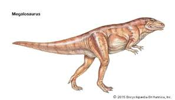

Look at the Bones
The first dinosaur bones were found in 1677 by a man named Robert Plot. He didn't know it was a dinoosaur when he found it. Plot assumed that it was some type of elephant bone but after comparing it with other types of elephants he concluded that it came from some giant species. In the early 1800's William Buckland found the jaw of a megalosaurus(he didn't know at the time) after numerous testing he figured out that it came from a acient type of lizzard and gave it the name "megalosaurus". 1 year after Buckland wrote his article on the megalosaurus Gideon Mantell ,a palaeontologist, used it as the bases for the dinosaur he discoverd called the "Iguanodon". It was named after the teeth he found, since it resembled the teeth of iguanas. Montell use this to find yet another speciesof dinosaur that he named the "Hylaeosaurus". These were the first 3 dinosaurs to be discorverd and named.
